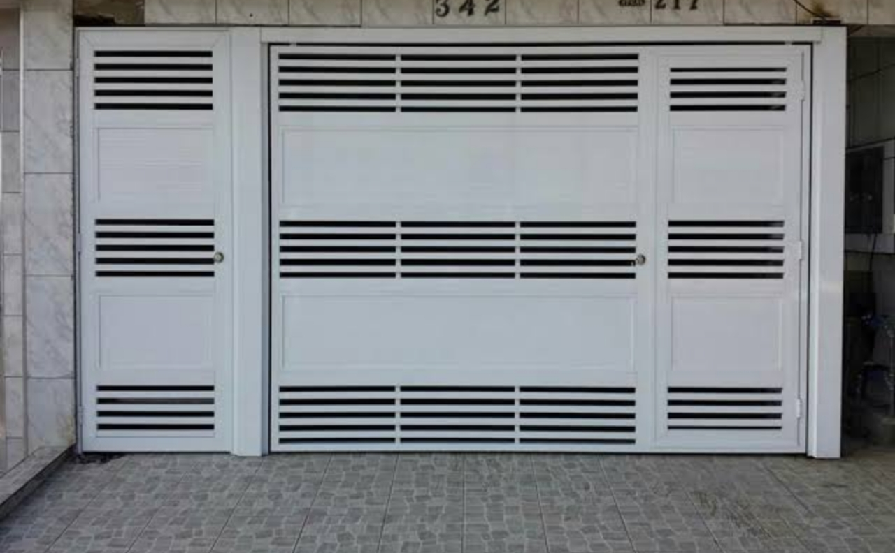
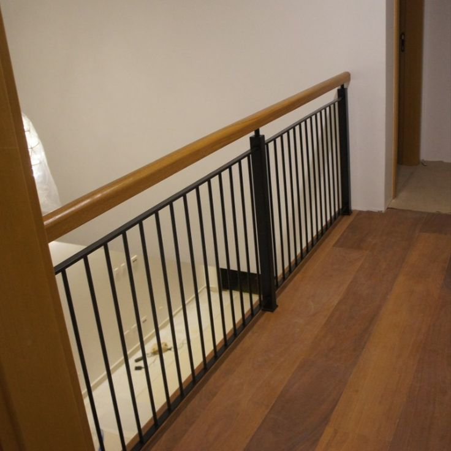
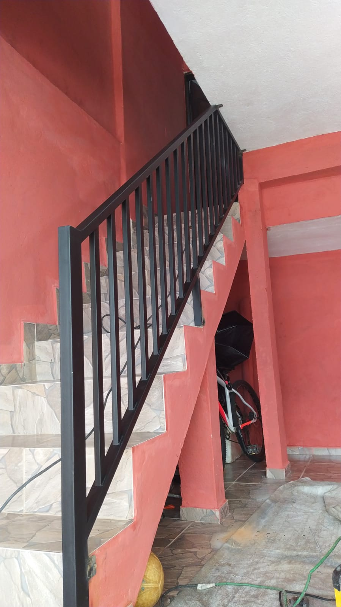
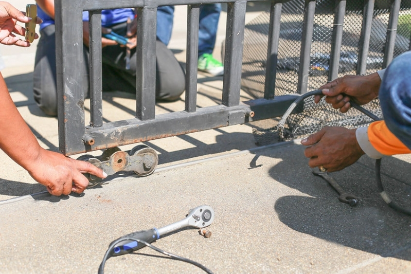
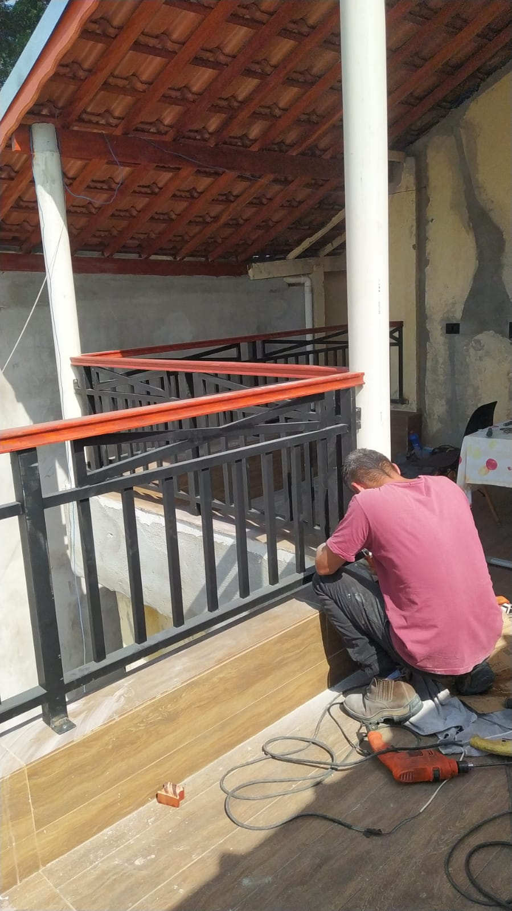
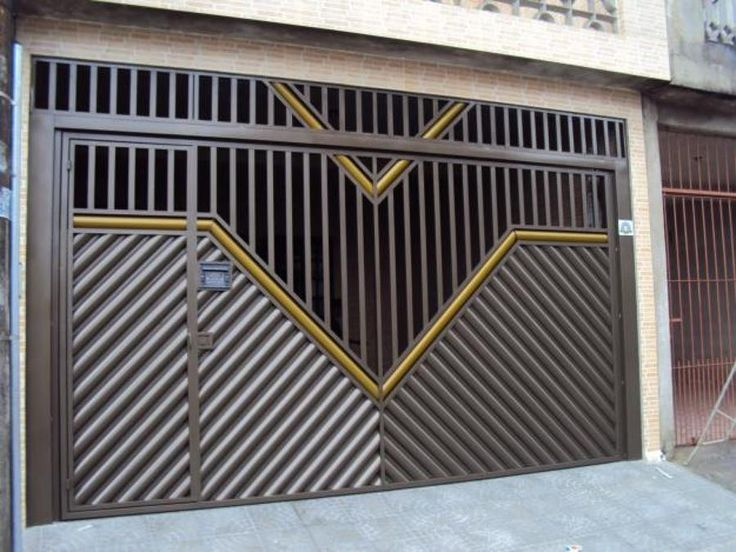
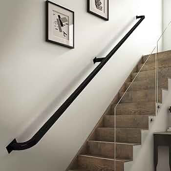
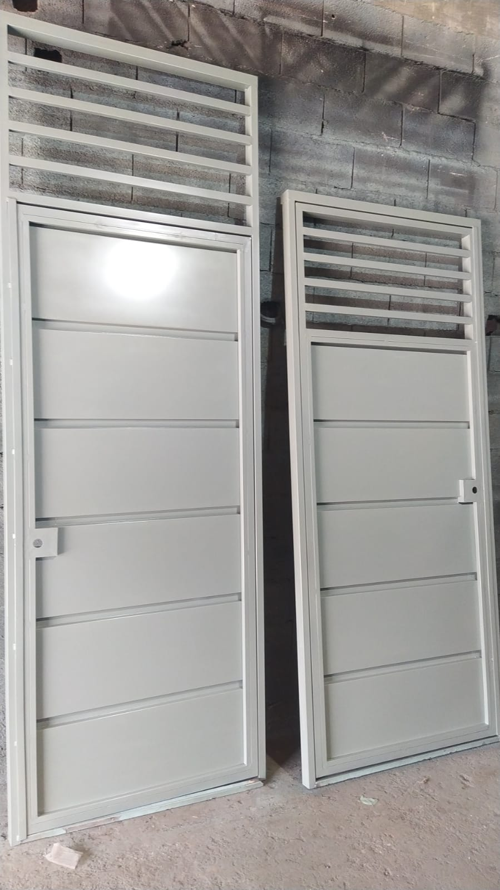

Portões automáticos
Portões automáticos
Instalação e adequação de portões automáticos para residências e comércios.
Pedir orçamentoSerralheria residencial e comercial
Veja serviços, trabalhos realizados e peça um orçamento direto pelo WhatsApp.
Catálogo
Veja o que a Patrimônio Portões faz e alguns exemplos de trabalhos já entregues.

Instalação e adequação de portões automáticos para residências e comércios.
Pedir orçamento
Fabricação, instalação e ajustes de portões basculantes sob medida.
Pedir orçamento
Grades para frente de casa, janelas, áreas externas e fechamentos metálicos.
Pedir orçamento
Estruturas para escadas, rampas, varandas e áreas que precisam de apoio e segurança.
Pedir orçamento
Consertos, troca de peças, soldas, ajustes e recuperação de estruturas metálicas.
Pedir orçamento
Regulagem, lubrificação, revisão de funcionamento e cuidados para aumentar a vida útil.
Pedir orçamento
Preparação, repintura e acabamento para renovar e proteger estruturas metálicas.
Pedir orçamento







Como funciona
O cliente pode enviar uma referência, escolher um serviço do catálogo ou solicitar uma visita para medir o local.
Contato
Troque o número abaixo pelo WhatsApp correto e ajuste a cidade de atendimento.